Hebbian Learning#
Introduction#
The Ubiquity of Associations#
How do you learn to associate things that occur together?
Peaches and ____________?
Cause and ____________?
Law and ____________?
Sooner or ____________?
Jack and ____________ went up ______ ____________ ?
🔑 Solution
Peaches and cream
Cause and effect
Law and order
Sooner or later
Jack and Jill went up the hill
You can automatically fill in most or all of the blanks using associations you have learned in the past. Associations are everywhere in cognition. You learn to associate all the different properties of individual objects, all the objects that make up familiar scenes, and generally any groups of people, properties, and/or things that tend to co-occur.
When you simply look at your laptop, you know about its weight, texture, range of likely temperatures, approximately how long the battery will operate before dying, and lots of other associated details. When you see only the top of a chair on the other side of a solid table, you automatically infer details about the rest of the chair that is out of sight - the top part of the chair that you see is strongly associated with the rest of a representation of a chair.
What do you expect to see in the waiting room of a doctor’s office? As each detail comes to mind, it triggers associations with other details: chairs to sit in while you wait -> coffee table -> magazines -> Oprah magazine, Sports Illustrated, The Economist -> cheap art on walls -> laminate flooring -> hand sanitizer -> clipboards with forms ->, etc. When you see lightning, what do you expect to hear? Associations can build up in temporal proximity (events occurring together in time, like lightning and thunder) and spatial proximity (objects that co-occur in space, like a chair and a table). Your stream of consciousness is partly built out of strong and weak associations.
How does the brain learn associations in the first place?
A Theory of Learning#
Perhaps the most influential early theory in neuroscience is about learning associations, summarized as: “Neurons that fire together, wire together.” The theory was advanced in great detail by Donald Hebb in 1949, who stated, “The general idea is an old one, that any two cells or systems of cells that are repeatedly active at the same time will tend to become ‘associated,’ so that activity in one facilitates activity in the other,” and it is now called Hebbian Learning. It is an elegant theory because it is simple and can potentially explain many psychological and neuroscientific data. And it is also a mechanistic theory that we can explore by building models.
Unsupervised Learning#
Hebbian learning is a type of unsupervised learning because it can extract structure from data without using feedback. There are no answers provided in unsupervised learning, only an acquired representation of structure present in the data. In contrast, supervised learning usually involves a decision that can be correct or incorrect (e.g., Is this a picture of a dog or a cat?) and uses training and feedback to improve accuracy.
Code Examples#
Installation & Setup#
%%capture
!pip install psyneulink
import numpy as np
import matplotlib.pyplot as plt
import psyneulink as pnl
Learning to Group Properties of Objects#
Objects typically have multiple properties, such as size, shape, color, texture, density, temperature, etc. It is useful to learn to group the different properties of an object together.
In the following cell, we define a set of features to represent objects. The features include size (small, medium, large), color (red, blue, green), and shape (circle, rectangle, triangle). A feature is coded as 1 when it is present and 0 when it is absent.
Next, we specify some objects, such as a small red circle. Each object is represented as a stimulus in the model using a feature-coded vector. For example:
A small red circle is coded as [1, 0, 0, 1, 0, 0, 1, 0, 0] and abbreviated as src.
# Define the set of features
feature_names = [
'small', 'medium', 'large',
'red', 'yellow', 'blue',
'circle', 'rectangle', 'triangle'
]
# Calculate the size of the feature space
size_f = len(feature_names)
# Define stimuli representing objects composed of features
small_red_circle = [1, 0, 0, 1, 0, 0, 1, 0, 0]
medium_yellow_rectangle = [0, 1, 0, 0, 1, 0, 0, 1, 0]
large_blue_triangle = [0, 0, 1, 0, 0, 1, 0, 0, 1]
# Note: Feature coding can be more elaborate, e.g., combining basic features.
# Represent green as the activation of blue + yellow, and use rectangle + triangle for a house
small_green_house = [1, 0, 0, 0, 1, 1, 0, 1, 1]
# Assign abbreviated aliases
src = small_red_circle
myr = medium_yellow_rectangle
lbt = large_blue_triangle
sgh = small_green_house
With our features defined, we can specify a collection of stimuli (sm_3_uniform) to present to the model. This collection is organized as a matrix where each row corresponds to a single stimulus, and each column represents a feature (as defined in feature_names). Here, the sm_3_uniform matrix contains three repetitions of each stimulus.
sm_3_uniform = np.matrix([src,src,src,myr,myr,myr,lbt,lbt,lbt])
sm_3_uniform
matrix([[1, 0, 0, 1, 0, 0, 1, 0, 0],
[1, 0, 0, 1, 0, 0, 1, 0, 0],
[1, 0, 0, 1, 0, 0, 1, 0, 0],
[0, 1, 0, 0, 1, 0, 0, 1, 0],
[0, 1, 0, 0, 1, 0, 0, 1, 0],
[0, 1, 0, 0, 1, 0, 0, 1, 0],
[0, 0, 1, 0, 0, 1, 0, 0, 1],
[0, 0, 1, 0, 0, 1, 0, 0, 1],
[0, 0, 1, 0, 0, 1, 0, 0, 1]])
You can also think about every feature as being represented by one artificial neuron in a system of neurons. For example, one neuron fires in response to objects with a “small” size, another fires for a “medium” size, and so on. Similarly, other neurons respond to colors like “red,” “yellow,” or “blue,” or shapes like “circles” or “triangles.” In our case, this amounts to a total of 9 feature neurons.
When we present a multi-feature stimulus to the system, the corresponding neurons in the system are expected to fire simultaneously. As these neurons fire together, their connections should strengthen, mirroring how associations are formed in the brain. For example, if the system frequently encounters “red,” “small,” and “circle” together, these neurons will become linked. As a result, activating just one feature (e.g., “red”) can trigger the activation of its associated features (“small” and “circle”). This process reflects the principle that neurons that fire together wire together.
Hebbian Model #1#
To model this, we will examine the activations for all stimuli. In this example, the stimuli are conveniently represented in the same way as their corresponding activation patterns, using 0s and 1s. As an example, consider the “red” neuron. When this neuron is active, we can examine which other neurons also tend to activate simultaneously. To quantify the relationships between neurons, we use a statistic called correlation. Correlation coefficients range from -1 to 1 and have two key characteristics:
Sign(+/-)
Positive(+): Two variables increase or decrease together (e.g., temperature and the volume of mercury).
Negative(-): As one variable increases, the other decreases (e.g., temperature and layers of clothing worn).
Strength
Values close to 1 or -1 indicate a strong relationship.
Values close to 0 indicate no relationship.
In the next cell, we compute a correlation matrix for the features of all our stimuli. The rows and columns represent the same set of feature neurons. Each value in the matrix indicates the correlation between two neurons. For example, the value at the intersection of the first row (“small” neuron) and the fifth column (“yellow” neuron) shows how often “small” and “yellow” fired together. (In Python, this value can be accessed using cor_mat[0, 4] since Python indexing starts at 0.)
# Compute the correlation matrix
cor_mat_command = np.corrcoef(sm_3_uniform,
rowvar=False) # rowvar=False indicates that the columns represent the features
ub = np.abs(cor_mat_command).max() # Maximum absolute correlation value
lb = -ub # Lower bound for the color scale
# Define a function to plot the correlation matrix
def plot_correlation_matrix(matrix, mask=None, title="Correlation Matrix", lb=lb, ub=ub):
"""
Function to plot a correlation matrix with optional masking
"""
plt.figure()
plt.title(title)
plt.xticks(np.arange(len(feature_names)), feature_names, rotation=35) # Rotate labels for better visibility
plt.yticks(np.arange(len(feature_names)), feature_names, rotation=35)
if mask is not None:
matrix = np.ma.array(matrix, mask=mask)
plt.imshow(matrix, cmap='RdBu_r', vmin=lb, vmax=ub)
plt.colorbar()
plt.show()
# Visualize lower half, upper half, and full correlation matrices
# Note: The correlation matrix is symmetric across the diagonal
plot_correlation_matrix(cor_mat_command, mask=np.triu(cor_mat_command), title="Lower Half of Correlation Matrix")
plot_correlation_matrix(cor_mat_command, mask=np.tril(cor_mat_command), title="Upper Half of Correlation Matrix")
plot_correlation_matrix(cor_mat_command, title="Full Correlation Matrix")

The correlation matrix, cor_mat_command, represents all connections between all neurons. The principal diagonal (top left to bottom right) is the self-correlation; a neuron is perfectly correlated with itself, so it should be all 1’s. Except on the diagonal, every connection is depicted twice in this matrix. For example, [1,2] is the same value as [2,1].
The correlation matrix can be thought of as the probability that the firing of two neurons will coincide, based on the frequency that their firing coincided in the past. The rows and columns of the matrix represent the features, ordered as they are in our feature list. Each entry represents the connection between a pair of neurons. One can think of the entries in the correlation matrix as directional probability, where the magnitude gives the strength of association, while the sign gives positive or negative association.
Positive values mean that the neurons tend to both 1) fire together and 2) be inactive at the same time. Negative values mean that when one of the neurons is firing, the other one tends to be inactive (and vice a versa). Values close to 0 mean that the neurons do not exhibit a linear relationship in their patterns of activity. Note, the correlations only detect linear relationships. For example, if the activity of two neurons had a perfectly U shaped relationship that would produce a correlation of 0.)
Once the connections between all the feature neurons have been established from learning, these connections can be useful for performing pattern completion. For example, if the model is given an object that is a “triangle”, it can use the connections to infer that this object is probably also “large” and “blue”.
Stimulus Driven Activation#
To demonstrate how the trained model (the correlation matrix, cor_mat_command) responds to stimuli, we present it an incomplete stimulus. The model should complete the stimulus based on the learned associations.
Consider the following incomplete stimulus: [0, 0, 0, 0, 0, 0, 0, 0, 1]. This stimulus represents only a “triangle.” We can use the learned associations to predict the other features of the object by multiplying the incomplete stimulus by the correlation matrix. The resulting vector will contain the predicted activations for all features.
# Define the incomplete stimulus
triangle = [0, 0, 0, 0, 0, 0, 0, 0, 1]
# Step 1: Construct a diagonal matrix from the stimulus vector
# This represents activating only the "triangle" neuron
diag_triangle = np.diag(triangle)
# Step 2: Multiply the diagonal matrix with the correlation matrix
# This selects and scales rows of the correlation matrix based on the stimulus
# It represents how activating the "triangle" neuron propagates activation to other neurons
active_mat = np.dot(diag_triangle, cor_mat_command)
# Step 3: Sum the rows to compute the total activation for each feature
# This consolidates the contributions from the activated neurons
active_mat = active_mat.sum(axis=0)
# This plot visualizes the activations from a triangular stimulus. The output is an array,
# and its values are mapped to the principal diagonal of this image. All off-diagonal elements are zero.
def plot_activation(vec, title, lb=lb, ub=ub):
plt.figure()
plt.title(title)
plt.imshow(np.diag(vec), cmap='RdBu_r', vmin=lb, vmax=ub)
plt.xticks(np.arange(len(feature_names)), feature_names, rotation=35)
plt.yticks(np.arange(len(feature_names)), feature_names, rotation=35)
plt.colorbar(label="Activation Value")
plt.show()
plot_activation(active_mat, "Activations of a Triangular Stimulus with Cor_mat_command")
# This plot shows the same values but as a line plot.
def plot_activation_line(vec, title):
plt.figure()
plt.stem(vec)
plt.title(title)
plt.xticks(np.arange(len(feature_names)), feature_names, rotation=35)
plt.xlabel("Feature")
plt.ylabel("Activation Strength")
plt.show()
plot_activation_line(active_mat, "Activations of a Triangular Stimulus with Cor_mat_command")
Accumulating Evidence#
In the previous example we made an over-simplifying assumption that the stimuli were all present at the same time. But most learning doesn’t happen at a single moment in time, it builds up over experience. We also computed correlations that include negative values, but the most basic implementation of “fire together wire together” should only detect simultaneous firing, not simultaneous absences of firing. So next we can build a model that accumulates evidence over time and only detects neurons firing together.
Hebbian Model #2#
We start with an empty connectivity matrix, full of 0’s to indicate that no neurons are wired together yet. When two neurons fire at the same time we’ll add a weight of 0.1 to the matrix.
# Create a new, all zeros correlation matrix
cor_mat_manual = np.zeros((size_f, size_f))
# Get the number of stimuli (number of rows in sm_3_uniform)
size_s = sm_3_uniform.shape[0]
# Define the learning rate as a parameter - this is how much the weights will change each stimulus
learning_rate = .1
for i, stim in enumerate(sm_3_uniform): # progress through all stimuli
for x in range(size_f):
for y in range(size_f):
cor_mat_manual[x, y] = cor_mat_manual[x, y] + (stim[0, x] * stim[0, y] * learning_rate)
# Plot the correlation matrix after each stimulus
plot_correlation_matrix(cor_mat_manual, title=f'Correlation Matrix after {i} stimuli')
 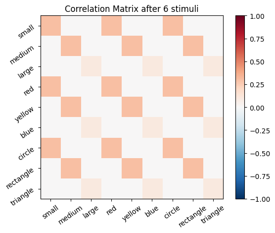
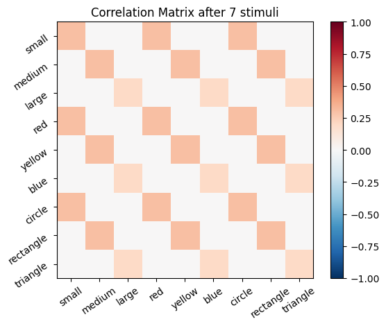
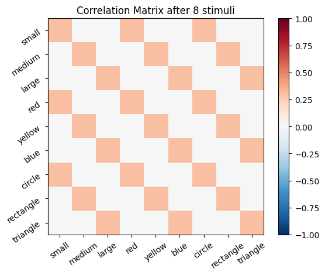
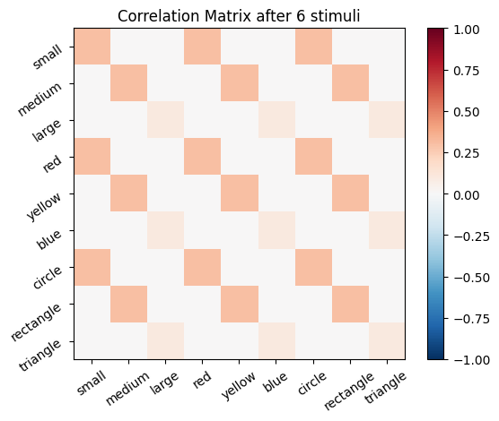
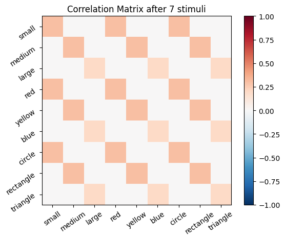
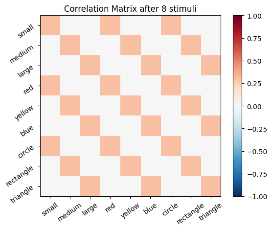
🧠 Exercise 1
Suppose you want to know what a Hebbian Model #1 learner would associate and infer it had seen 10 small red circles, 7 medium yellow rectangles, and 4 large blue triangles if instead of the stimuli described earlier. Then, what does it infer if we present it the color purple?
Create a set of stimuli and then a correlation matrix that fit this situation. How do you code purple as a stimulus? What output do you get from testing the trained model on an input of purple? Explain how you interpret this output.
# Create a set of stimuli
stimulus_matrix = # TODO: Your code here
# Compute the correlation matrix with numpy
correlation_matrix = # TODO: Your code here
# Define the purple stimulus
purple = # TODO: Your code here
# Compute the activations for the purple stimulus
# TODO: Your code here
active_mat_purple = # TODO: Your code here
# Plot the activations for the purple stimulus
plot_activation_line(active_mat_purple, "Activations of a Purple Stimulus")
🔑 Solution 1
# Create a set of stimuli
stimulus_matrix = np.matrix([src] * 10 + [myr] * 7 + [lbt] * 4)
# Compute the correlation matrix with numpy
correlation_matrix = np.corrcoef(stimulus_matrix, rowvar=False)
# Define the purple stimulus
purple = [0, 0, 0, .5, 0, .5, 0, 0, 0]
# Compute the activations for the purple stimulus
diag_purple = np.diag(purple)
active_mat_purple = np.dot(diag_purple, cor_mat_command)
active_mat_purple = active_mat_purple.sum(axis=0)
# Plot the activations for the purple stimulus
plot_activation_line(active_mat_purple, "Activations of a Purple Stimulus")
🧠 Exercise 2
In the example of Hebbian Model #2 above, we used 3 loops to update all the values in cor_mat. You should reason through how and why this works by considering a few specific examples. When i = 0, what are the values of stim? When x and y equal 0, what number will be updated in cor_mat?
🧠 Exercise 2a
There is a more compact way to accomplish the same result as the 3 loops above, using the transpose function and a single loop.
You can transpose an array (turn rows into columns, and columns into rows) by adding .T to the array:
stim_mat[0,:].T
And you can do matrix multiplication of two arrays with the appropriate dimensionality using @:
stim_mat[0,:].T@stim_mat[0,:]
Now create a single loop that progresses through the stimuli in stim_mat and creates the same resulting cor_mat2 values as above.
# Create a new, all zeros correlation matrix
cor_mat_compact = np.zeros((size_f, size_f))
# Get the number of stimuli (number of rows in sm_3_uniform)
size_s = sm_3_uniform.shape[0]
# Define the learning rate as a parameter - this is how much the weights will change each stimulus
learning_rate = .1
for stim in enumerate(sm_3_uniform): # progress through all stimuli
cor_mat_compact = # TODO: Your code here
# Verify that we got the same answer as before
# allclose returns True if each entry of the first array is equal to the corresponding entry in the second, and False otherwise
same_ans = np.allclose(cor_mat_compact, cor_mat_manual)
if same_ans:
print('cor_mat_compact and cor_mat_manual matrices are equal')
🔑 Solution 2a
# Create a new, all zeros correlation matrix
cor_mat_compact = np.zeros((size_f, size_f))
# Get the number of stimuli (number of rows in sm_3_uniform)
size_s = sm_3_uniform.shape[0]
# Define the learning rate as a parameter - this is how much the weights will change each stimulus
learning_rate = .1
for stim in sm_3_uniform: # progress through all stimuli
cor_mat_compact = cor_mat_compact + learning_rate * stim.T @ stim
# Verify that we got the same answer as before
# allclose returns True if each entry of the first array is equal to the corresponding entry in the second, and False otherwise
same_ans=np.allclose(cor_mat_compact, cor_mat_manual)
if same_ans:
print('cor_mat_compact and cor_mat_manual matrices are equal')
🧠 Exercise 2b
Matrix multiplication can simplify the code even more, eliminating the need for any loops. Use the transpose function .T and matrix multiplication function @ to matrix multiply stim_mat by itself transposed. As a final step, multiply this entire function by a value that will reproduce the same matrix values in cor_mat above.
cor_mat_compactest = # TODO: Your code here
# Verify correctness
same_ans = np.allclose(cor_mat_compactest, cor_mat_manual)
if same_ans:
print('cor_mat_compactest and cor_mat_manual matrices are equal')
🔑 Solution
cor_mat_compactest = sm_3_uniform.T @ sm_3_uniform * learning_rate
# Verify correctness
same_ans = np.allclose(cor_mat_compactest,cor_mat_manual)
if same_ans:
print('cor_mat_compactest and cor_mat_manual matrices are equal')
Hebbian Learning Processing#
In the following section, we will explore how Hebbian learning correlation matrices can be processed to achieve “normalization” and to remove “self-correlation”. Similar to Exercise 1, in the next cell ,we create a matrix sm_nonuniform of stimuli that includes 100 small red circles, 70 medium yellow rectangles, and 40 large blue triangles. Then, we will use transpose and matrix multiplication to build a matrix of connection strengths cor_mat_nonuniform.
learning_rate = .1
sm_nonuniform = np.array([100 * np.array(src), 70 * np.array(myr), 40 * np.array(lbt)])
cor_mat_nonuniform = sm_nonuniform.T @ sm_nonuniform * learning_rate
ub = np.amax(np.amax(np.abs(cor_mat_nonuniform)))
lb = -ub
plot_correlation_matrix(
cor_mat_nonuniform,
title="Correlation Matrix Created by Matrix Multiplication for Nonuniform Stimuli",
lb=lb,
ub=ub
)
Then, we present a purple stimulus to this model.
purple = np.array([0, 0, 0, .5, 0, .5, 0, 0, 0])
active_mat_purple = purple @ cor_mat_nonuniform
🧠 Exercise 3
To calculate the activation, we use the following shorter version:
active_mat_purple = purple @ cor_mat_nonuniform
Instead of the calculations used above:
diag_purple = np.diag(purple)
scaled_mat = np.dot(diag_purple, cor_mat_nonuniform)
active_mat_purple = scaled_matrix.sum(axis=0)
Please convince yourself, that these are equivalent
🔑 Solution 3
Method 1
In the first method, purple @ cor_mat_nonuniform performs matrix multiplication. This computes the dot product of the purple vector with each column of cor_mat_nonuniform and is mathematically equivalent to:
The second method constructs a diagonal matrix diag_purple, multiplies it with the correlation matrix cor_mat_nonuniform and then sums along rows:
Method 2
Step 1: diag_purple = np.diag(purple)
Step 2: scaled_mat = np.dot(diag_purple, cor_mat_nonuniform)
Step 3: active_mat_purple = scaled_mat.sum(axis=0)
plot_activation_line(active_mat_purple, "Activation from Purple Stimulus with Cor_mat_nonuniform")
The model associated the color purple mostly with the small red circle, slightly with the large blue triangle, and not at all with the medium yellow rectangle. This makes sense because the model was trained with more exposure to small red circles. Purple activated red, so it strongly associates with small and circle. Purple also activated blue and its associates, large and triangle.
Bounding Output#
It is often a good idea to set boundaries on the values of neuron activity in a model. Most neurons can only physically fire a maximum of a few hundred times per second, and tend to fire closer to the order of around 10 times per second. Even when we take the liberty of ignoring physical constraints on individual neurons (or even if we assume the unit we are modeling is composed of thousands of neurons and could, in principle, cumulatively send hundreds of thousands of action potentials per second), unbounded values that tend toward +/- infinity cause practical problems for many functions. In the following cells we will explore some ways to regularize our model outputs.
Normalize The Activation Matrix#
We can normalize the activation matrix
# Normalize the output by dividing with the max:
active_mat_purple_normalized = active_mat_purple/max(active_mat_purple)
plot_activation_line(active_mat_purple, 'Activation from Purple Stimulus')
plot_activation_line(active_mat_purple_normalized, 'Normalized Activation from Purple Stimulus')
Normalize The Correlation Matrix#
Instead, we can also normalize the correlation matrix:
# Calculate the absolute of the maximum of the correlation matrix
max_cor_mat = np.max(cor_mat_nonuniform)
max_cor_mat_absolute = np.abs(max_cor_mat)
# Set the lower and upper bound for the original matrix
ub_cor_mat = max_cor_mat_absolute
lb_cor_mat = -ub
# Calculate the normalized correlation matrix
cor_mat_nonuniform_normalized = cor_mat_nonuniform / max_cor_mat_absolute
# The normalized upper and lower bounds are 1. and -1. respectivly
ub_cor_mat_normalized = 1.
lb_cor_mat_normalized = -1.
# Visualize the matrices
plot_correlation_matrix(
cor_mat_nonuniform,
title='Correlation Matrix',
lb=lb_cor_mat,
ub=ub_cor_mat)
plot_correlation_matrix(
cor_mat_nonuniform_normalized,
title='Normalized Correlation Matrix',
lb=lb_cor_mat_normalized,
ub=ub_cor_mat_normalized
)
# Calculate the activation for the purple stimulus with both matrices:
active_mat_purple = purple @ cor_mat_nonuniform
active_mat_purple_cmn = purple @ cor_mat_nonuniform_normalized
# Visualize the Activations
plot_activation_line(active_mat_purple, 'Activation with Original Correlation Matrix')
plot_activation_line(active_mat_purple_cmn, 'Activation with Normalized Correlation Matrix')
plot_activation_line(active_mat_purple_normalized, 'Normalized Activation with Original Correlation Matrix')
 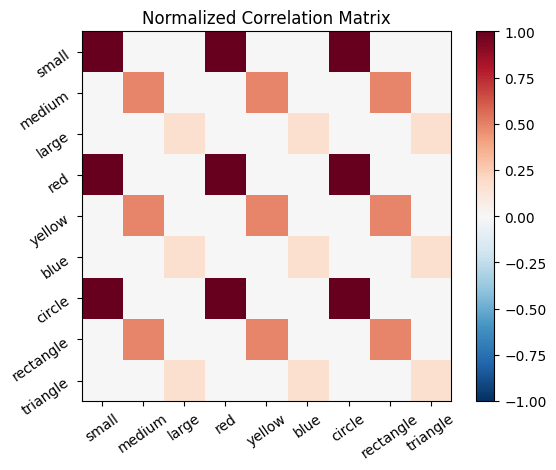
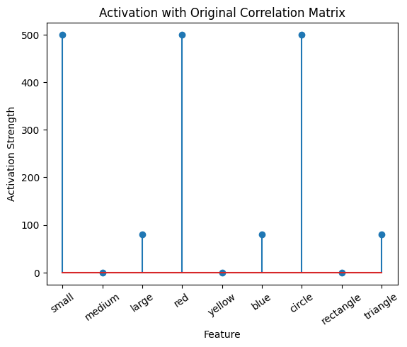
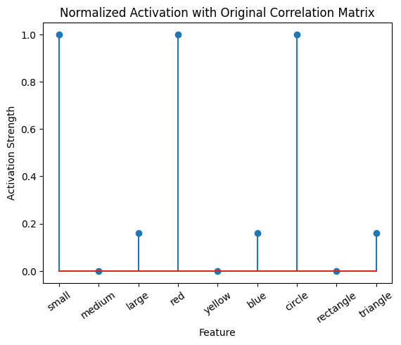
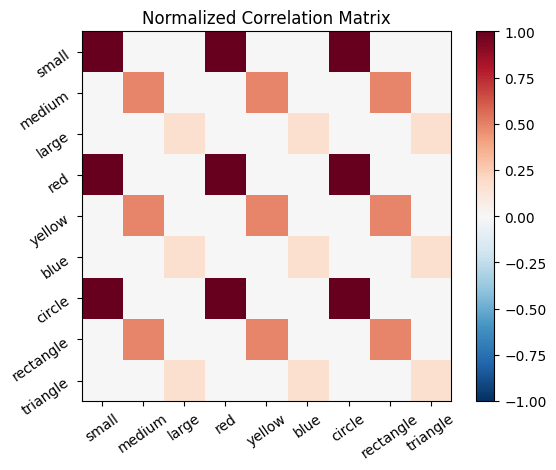
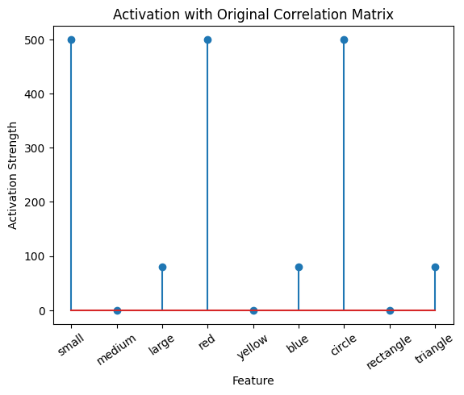
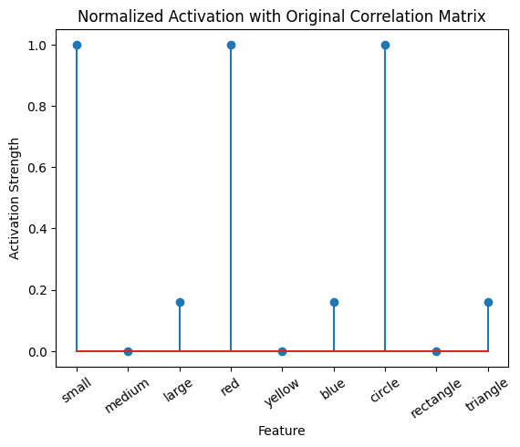
Self-correlation#
Up until this point, we have been creating correlation matrices that include self-correlation. That is, a stimulus is positively correlated with itself. This makes sense, because all stimuli correlate with themselves. That is, if we are shown something red, we know we have seen something red. However, if we consider what an output of a Hebbian system should be: the stimuli the learner associates with an input (I see red, I think stop sign), this doesn’t seem quite right. After all, if one were prompted to respond to the word “red” with the first word that comes to mind, one would not typically respond, “red”.
From another perspective, a neuron with positive excitatory connections to itself would behave a bit like a microphone placed next to a speaker that is amplifying the input to the microphone – a runaway positive feedback loop. In most cases we don’t want our models to have seizures.
It follows, that when constructing correlation matrices, it could be useful to remove self-correlation.
🧠 Exercise 4
Create a correlation matrix that does not include self-correlation.
# Calculate the Correlation Matrix
learning_rate = .1
cor_mat_no_self = sm_nonuniform.T @ sm_nonuniform * learning_rate
# TODO: Your code here
# Visualize the Correlation Matrix
ub = np.abs(np.max(cor_mat_no_self))
lb = -ub
plot_correlation_matrix(cor_mat_no_self, title= 'Correlation Matrix without Self Correlation', lb=lb, ub=ub)
🔑 Solution 4
# Calculate the Correlation Matrix
learning_rate = .1
cor_mat_no_self = sm_nonuniform.T @ sm_nonuniform * learning_rate
for i in range(cor_mat_no_self.shape[0]):
cor_mat_no_self[i,i]=0
# Visualize the Correlation Matrix
ub = np.abs(np.max(cor_mat_no_self))
lb = -ub
plot_correlation_matrix(cor_mat_no_self, title= 'Correlation Matrix without Self Correlation', lb=lb, ub=ub)
Shorter:
# Calculate the Correlation Matrix
learning_rate = .1
cor_mat_no_self = sm_nonuniform.T @ sm_nonuniform * learning_rate
np.fill_diagonal(cor_mat_no_self, 0)
# Visualize the Correlation Matrix
ub = np.abs(np.max(cor_mat_no_self))
lb = -ub
plot_correlation_matrix(cor_mat_no_self, title= 'Correlation Matrix without Self Correlation', lb=lb, ub=ub)
Hebbian Learning In PsyNeuLink#
Hebbian learning is achieved in PsyNeuLink by creating an appropriately sized recurrent transfer mechanism, and enabling learning. To do this we simply set the argument enable_learning to True when defining your transfer mechanism.
To initialize your matrix to zero, as we have been doing, set the arguments “auto” to 0 and “hetero” to 0.
Hebbian Model #3#
# Create a Composition
Hebb_comp = pnl.Composition()
# Create the mechanism ensuring `enable_learning` is set to `True`
Hebb_mech=pnl.RecurrentTransferMechanism(
input_shapes=size_f,
function=pnl.Linear,
enable_learning = True,
name='Hebb_mech',
auto=0,
hetero=0,
)
# Add the mechanism to the composition
Hebb_comp.add_node(Hebb_mech)
/Users/younesstrittmatter/Documents/GitHub/younesStrittmatter/personal/NEU-PSY-MOL-502/.venv/lib/python3.11/site-packages/psyneulink/core/compositions/composition.py:4652: UserWarning: NodeRole.LEARNING should be assigned with caution to Composition-0. Learning Components are generally constructed automatically as part of a learning Pathway. Doing so otherwise may cause unexpected results.
warnings.warn(f"{role} should be assigned with caution to {self.name}. "
Let’s try training our new system on a single stimulus from the set we’ve been working with; small red circle.
We can run our system as many times as we like, using only one stimulus as input. In the following cell, we run the system 5 times (num_trials = 5).
Does the system behave the way you expected it to? In what ways does it behave similar and different to the previous two Hebbian Models #1 & #2?
# Set an execution id
Hebb_comp.execution_id = 1
# Define a function that plots the correlation matrix and the stimulus activation to use in the callback function after each strep of the PNL composition learn method
def vis_info():
hebb_matrix = Hebb_mech.matrix.base
active_mat = Hebb_mech.value[0]
ub = np.amax(np.abs(hebb_matrix))
lb = -ub
plot_correlation_matrix(hebb_matrix, title="PNL Hebbian Matrix", lb=lb, ub=ub)
plot_activation_line(active_mat, 'Activation from Stimulus with PNL Hebbian Matrix')
inputs_dict = {Hebb_mech: src}
out = Hebb_comp.learn(num_trials=5,
call_after_trial=vis_info,
inputs=inputs_dict)
/Users/younesstrittmatter/Documents/GitHub/younesStrittmatter/personal/NEU-PSY-MOL-502/.venv/lib/python3.11/site-packages/psyneulink/core/compositions/composition.py:11665: UserWarning: learn() method called on 'Composition-0', but it has no learning components; it will be run but no learning will occur.
warnings.warn(f"learn() method called on '{self.name}', but it has no learning components; "

 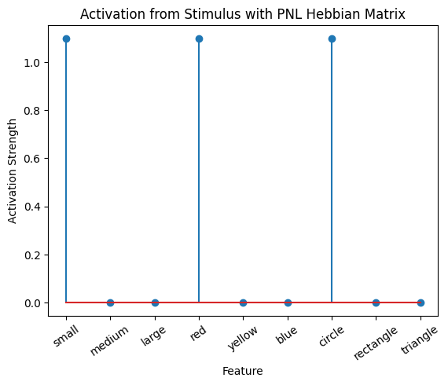
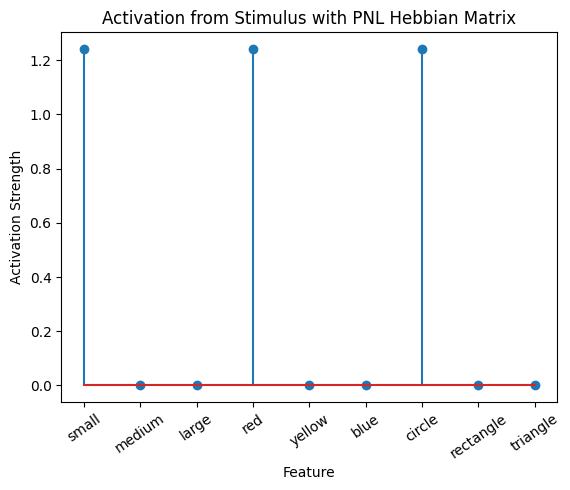
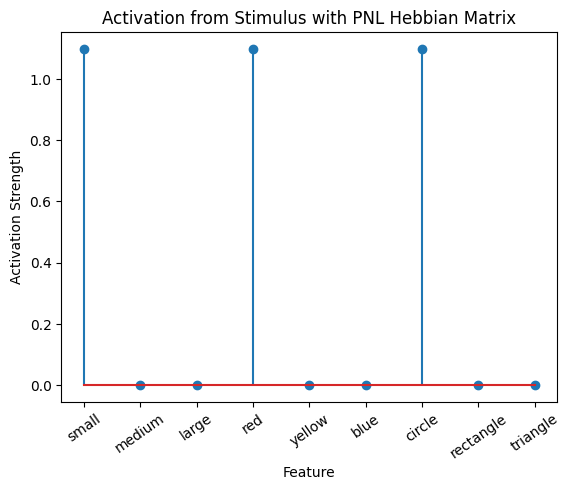
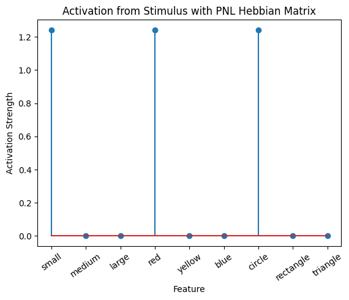
 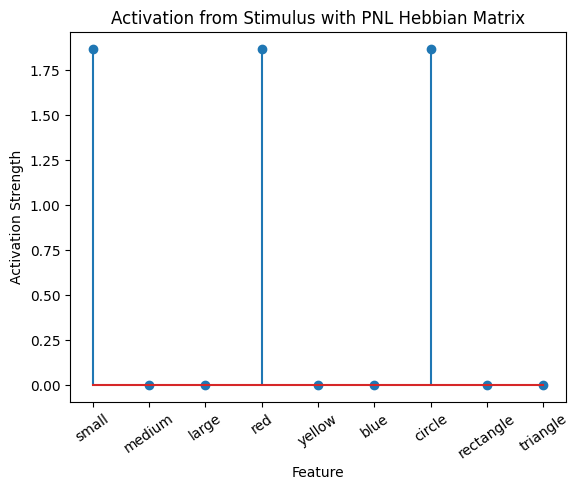
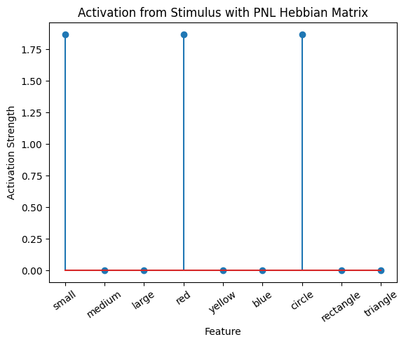
To better understand what is happening, try running your system with various inputs. To do this you will need to re-initialize the system by rerunning the cell that created Hebbian Model #3, or by copying that code into the top of the next cell. Models that learn get modified by running, and so we need to re-initialize to see how the model evolves with different kinds of input.
# Create a Composition
Hebb_comp = pnl.Composition()
# Create the mechanism ensuring `enable_learning` is set to `True`
Hebb_mech=pnl.RecurrentTransferMechanism(
input_shapes=size_f,
function=pnl.Linear,
enable_learning = True,
name='Hebb_mech',
auto=0,
hetero=0,
)
# Add the mechanism to the composition
Hebb_comp.add_node(Hebb_mech)
# Set an execution id
Hebb_comp.execution_id = 1
# Define a function that plots the correlation matrix and the stimulus activation to use in the callback function after each strep of the PNL composition learn method
def vis_info():
hebb_matrix = Hebb_mech.matrix.base
active_mat = Hebb_mech.value[0]
ub = np.amax(np.abs(hebb_matrix))
lb = -ub
plot_correlation_matrix(hebb_matrix, title="PNL Hebbian Matrix", lb=lb, ub=ub)
plot_activation_line(active_mat, 'Activation from Stimulus with PNL Hebbian Matrix')
# Set your input here:
zero_stim = [0] * size_f
stimulus_list = [] # e.g., [src, lbt]; [src, zero_stim, lbt]; [src, src, lbt]; [src, src, zero_stim, lbt]; ...
inputs_dict = {Hebb_mech: stimulus_list}
out = Hebb_comp.learn(num_trials=len(stimulus_list),
call_after_trial=vis_info,
inputs=inputs_dict)
During the first trials, the algorithms behaves very similarly to the Hebbian Model #2 we defined above (except with the diagonal entries being set to zero). However, after introducing a second stimulus, the model appears to learn several extra associations that were not learned by our previous model. It appears that the model is learning associations between different stimulus patterns, rather than just within a single pattern, as the previous models did. For example, it learns associations “small-medium”, “small-yellow” and “small-rectangle”, representing a mixture of the features from the small red circle with those of the medium yellow rectangle.
This behavior arises because PsyNeuLink implements a learning mechanism that is designed to be neurologically plausible. Instead of simply updating the weight matrix based on the current input alone (as in the Hebbian learning algorithm described above), it incorporates feedback and recurrent connections. For a deeper explanation of this mechanism, including its use of cycles and feedback, refer to PsyNeuLink Composition Cycles and Feedback.
To simulate the behavior of Hebbian Model #2, we can introduce zero-input intervals between the stimuli. These intervals reset the previous activation to zero, ensuring that only the current input contributes to the learning process. This mimics the behavior of the original Hebbian model by isolating each stimulus from the influence of prior activations.
Hebb_comp = pnl.Composition()
Hebb_mech = pnl.RecurrentTransferMechanism(
input_shapes=size_f,
function=pnl.Linear,
enable_learning=True,
name='Hebb_mech',
auto=0,
hetero=0
)
Hebb_comp.add_node(Hebb_mech)
inputs_dict = {Hebb_mech: [src, zero_stim, myr]}
out = Hebb_comp.learn(num_trials=3,
call_after_trial=vis_info,
inputs=inputs_dict)
/Users/younesstrittmatter/Documents/GitHub/younesStrittmatter/personal/NEU-PSY-MOL-502/.venv/lib/python3.11/site-packages/psyneulink/core/compositions/composition.py:4652: UserWarning: NodeRole.LEARNING should be assigned with caution to Composition-2. Learning Components are generally constructed automatically as part of a learning Pathway. Doing so otherwise may cause unexpected results.
warnings.warn(f"{role} should be assigned with caution to {self.name}. "
/Users/younesstrittmatter/Documents/GitHub/younesStrittmatter/personal/NEU-PSY-MOL-502/.venv/lib/python3.11/site-packages/psyneulink/core/compositions/composition.py:11665: UserWarning: learn() method called on 'Composition-2', but it has no learning components; it will be run but no learning will occur.
warnings.warn(f"learn() method called on '{self.name}', but it has no learning components; "
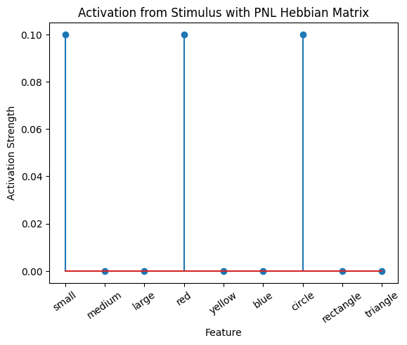
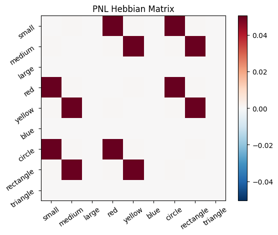
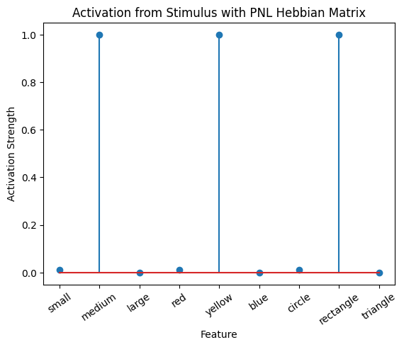
A less “hacky” way to accomplish the same thing is to define a function that clears the output of the network after each trial. This can be done by defining a suitable function to clear the value, and to call it after every trial in a similar fashion to how we called the vis_info function after each trial.
Hebb_mech = pnl.RecurrentTransferMechanism(
input_shapes=size_f,
function=pnl.Linear,
integrator_mode=True,
integration_rate=1.,
enable_learning=True,
name='Hebb_mech',
auto=0,
hetero=0
)
def clear_value():
Hebb_mech.reset()
def callback():
vis_info()
clear_value()
Hebb_comp = pnl.Composition()
Hebb_comp.add_node(Hebb_mech)
inputs_dict = {Hebb_mech: [src] * 5 + [myr] * 5}
out = Hebb_comp.learn(num_trials=10,
call_after_trial=callback,
inputs=inputs_dict)
ub = np.max(np.abs(Hebb_mech.matrix.base))
lb = -ub
plt.imshow(Hebb_mech.matrix.base, cmap='RdBu_r', vmin=lb, vmax=ub)
/Users/younesstrittmatter/Documents/GitHub/younesStrittmatter/personal/NEU-PSY-MOL-502/.venv/lib/python3.11/site-packages/psyneulink/core/compositions/composition.py:4652: UserWarning: NodeRole.LEARNING should be assigned with caution to Composition-3. Learning Components are generally constructed automatically as part of a learning Pathway. Doing so otherwise may cause unexpected results.
warnings.warn(f"{role} should be assigned with caution to {self.name}. "
/Users/younesstrittmatter/Documents/GitHub/younesStrittmatter/personal/NEU-PSY-MOL-502/.venv/lib/python3.11/site-packages/psyneulink/core/compositions/composition.py:11665: UserWarning: learn() method called on 'Composition-3', but it has no learning components; it will be run but no learning will occur.
warnings.warn(f"learn() method called on '{self.name}', but it has no learning components; "
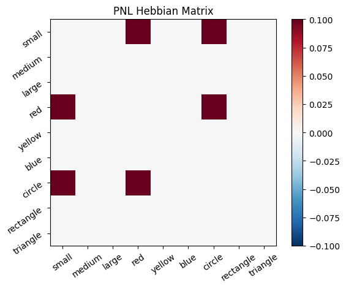
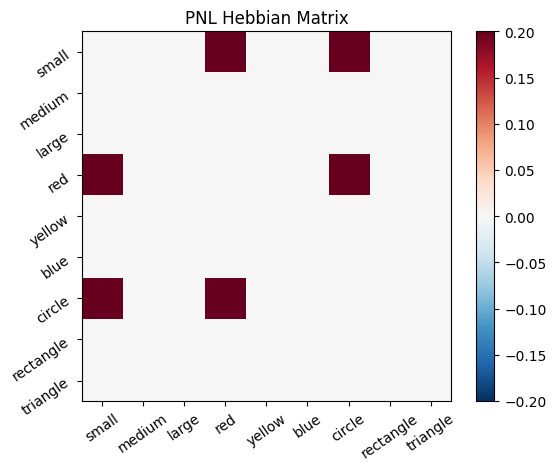
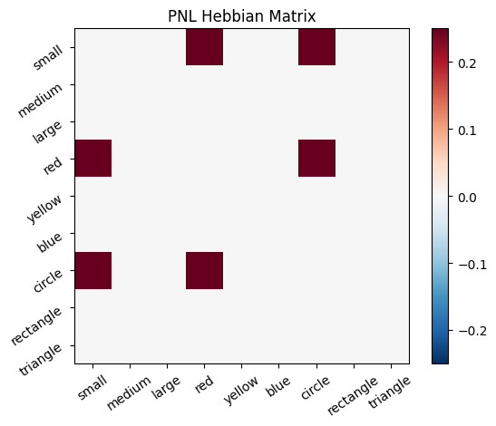
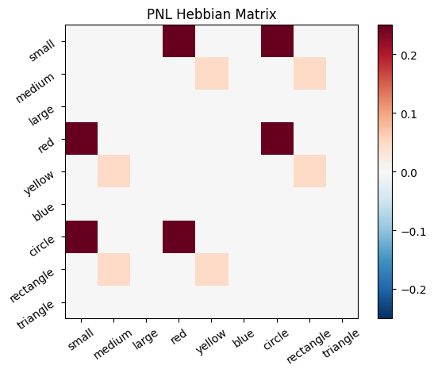
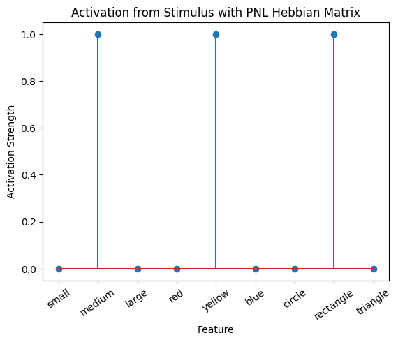
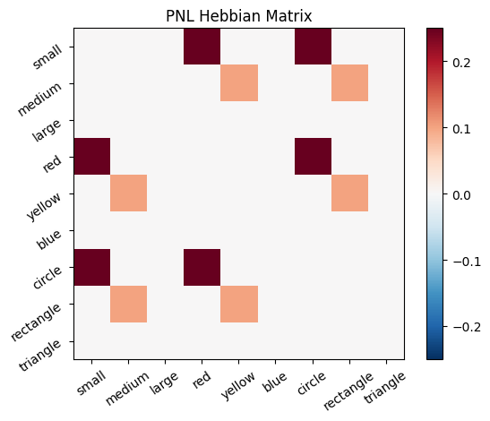
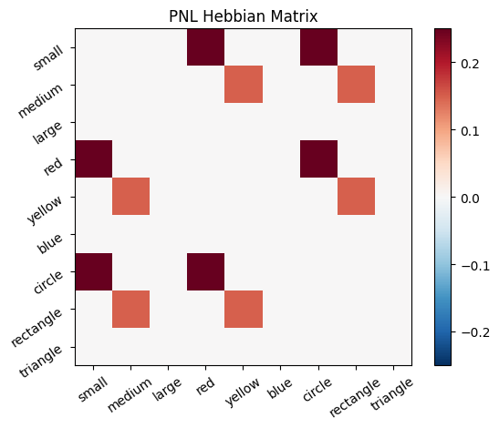
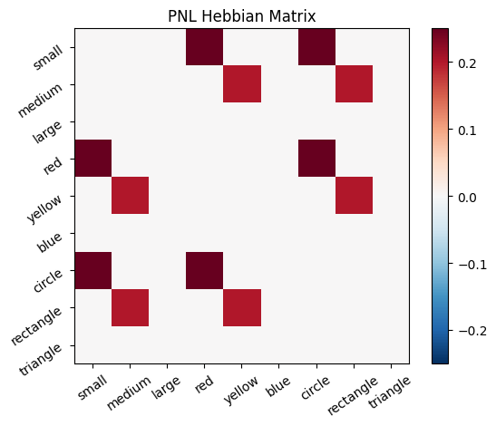
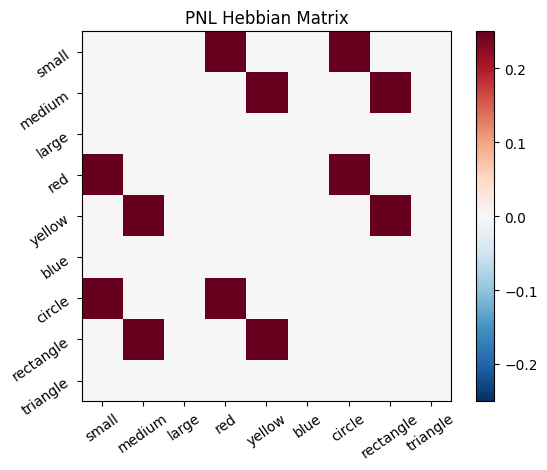
<matplotlib.image.AxesImage at 0x293cab410>
# TODO: Add exercises 5- 9